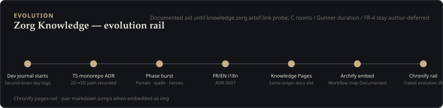

Chronify timelines
Documented same-origin dated rail for Zorg Knowledge. Generated with Chronify; hosted under /chronify/ on GitHub Pages after merge. Not Live playability.

zorg-evolution.timeline.json.GAME_SPEC wins. C rooms, Gunner duration, and FR-4 stay author-deferred. Probe https://knowledge.zorg.artof.link/chronify/ this session after Pages deploy before claiming GET 200.